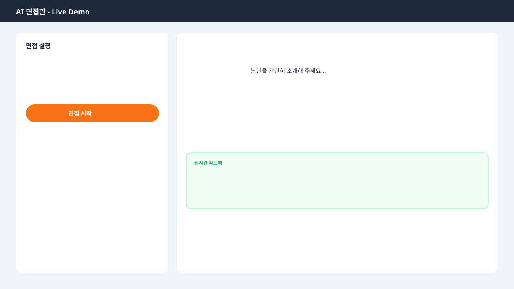

🎯 어디에 쓰나
- 취업 준비생 실전 면접 전, 직무별 예상 질문에 답하며 자신감을 키웁니다.
- 이직 준비자 경력직 면접에서 자주 나오는 STAR·기술·인성 질문을 반복 연습합니다.
- 대학·부트캠프 취업 지원 프로그램에서 1:1 면접 코칭을 AI로 보완합니다.
- 자기 점검 답변마다 강점·개선점·추천 표현을 받아 말하기 습관을 교정합니다.
🛠 Tech Stack
- OpenAI GPT-4o
- LangChain
- Gradio
- Whisper STT
- FastAPI
- Docker
- Oracle Always Free
- GitHub Actions
🧠 어떻게 만들었나
취업·이직 준비생을 위한 AI 면접관 기반 모의 면접 서비스입니다.
지원 직무와 경력 수준에 맞는 면접 질문을 생성하고, 답변에 대한 실시간 피드백을 제공합니다.
OpenAI GPT API와 LangChain으로 면접관 페르소나를 구성하고, Whisper STT로 음성·텍스트 답변을 받아 분석합니다.
Gradio·FastAPI 웹 UI에서 면접 세션을 진행하며, Docker로 Oracle Cloud에 배포합니다.
사용자는 직무·경력을 입력하면 AI 면접관이 질문을 던지고,
답변마다 강점 · 개선점 · 추천 표현을 실시간으로 받을 수 있습니다.
세션 종료 후 종합 리포트로 면접 준비 상태를 점검합니다.
📋 사용 흐름
- 1 직무·경력 수준 선택
- 2 AI 면접관과 모의 면접 시작
- 3 질문에 텍스트 또는 음성으로 답변
- 4 답변마다 실시간 피드백 확인
- 5 세션 종료 후 종합 리포트 다운로드
💬 이 프로젝트 어떠세요?
GitHub 계정으로 로그인하면 댓글이 본인 리포의 GitHub Discussions에 자동 저장됩니다.